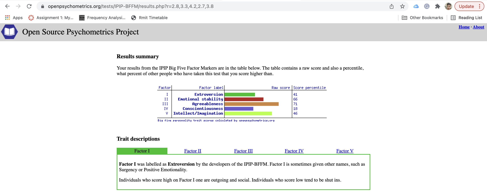
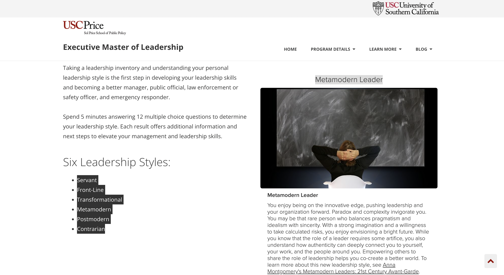

Personal Infomation
Name: Yao Lin
Student number s3747404
Email Address: s3747404@student.rmit.edu.au
I am very passionate about technology, and always curious about how technology works. I like to spend some time watching various programming tutorials and new tech on youtube when I am free, other than that love sports, my favourite sports are swimming and table tennis.
Intrerest in IT
My interests in IT are keeping changing, the reason being is probably still lack of overall knowledge in the IT field,
at the beginning of learning IT, was interested in game development, was spent 8 months in the library trying to figure
out how to use java to developer basic game, did developer some games successfully, but have the worst user interface.
but currently are more interested in website development because it looks more useful to me.
The reason I Choose RMIT firstly it is one of the greatest universities in Australia, and I was dreaming of going to
RMIT when I was a child, and RMIT also offers the best resources for programmers, so I can become the greatest
programmer in the world.
During the study, I expect to get an overview of all the areas in the IT field. and experience how to study and work in
a team.
Ideal Job
Job title:
Job Description
as Front-end developers in the company, they should have passion for this field, and be able to build good UI/UX design, always pay attention to details. The salary is around $100k - 120k, and the position provides plenty of training opportunities for free, so staff can still have lots of chances to learn and improve even after getting the job. what the position appears to me is a truly flexible workplace, people who work there have a choice to work in the office or work from home. so, I can go wherever I want even when I am working.
Skill Required
This position requires experience with HTML, CSS, Javascript, javascript framework react, Git, API.
Skills I Have
The Skills I currently have are basic HTML, CSS, Javascript, React, Git
Learnig Plan
Youtube is always one of the best plateform to gain new knowledge. it is easy to distinguish good or bad content on this platform because there is information of a number of views and thumbnail below the video, so makes me easier to find what I need to learn, and get to know more people in this field is also important because there are many things can only be taught by people rather than textbooks.
Personality Profile
Test 1: 16personalities

Test 2: Open Source Psychometric Project

Test 3: USC Price

Thoughts after the testing:
These Results help me get to know myself from a different perspective, it shows my personality is more like a mediator, which I think is true, I always care about other people's feelings, the result makes me more confident to work in a team because I am always willing to help other people in a team and make team become better. my behaviour would be influenced by the results in a team is I would be more active in a team so that I can get more advice from them. helping them by giving good feedback based on their advice. When forming a team, I will try to listen to everyone's opinions first, the results show I am more prospecting than judging, so I can respond to teammates with the answer they truly need under the circumstances to make them feel valued.
Project Idea
Motivation:
Nowadays, almost every business or organization would have its own website, and the problem is there is only 1 website used to represent their organization, for small businesses it probably would be more than enough. But for relatively bigger organizations such as RMIT, as time goes by, they keep adding more and more functionality to their website, it ends up when a user opens the website, countless option in the menu bar shows up, which can be so overwhelming. it would be very common if they couldn't find the links, they want to accomplish their task. so, an FQA page with high-efficiency search functionality is very necessary.
Description:
The FAQ page would be in the menu bar at the top of the website, when the user clicks it, the microphone shape sign would show up to record what the user says, then the user would be able to ask questions about the university, for example -"how do pay tuition fee for this semester?" when users stop talking for more than 2 seconds, the system would transfer what user says to text then send to the server. then on the server-side, it would start to search the database base on the keyword that the user asked in his question. once find the most relevant answer from the database, it would send it back to the clients' browser, then show the answer to the user in text form.
Outcome
What impact will this development have? this kind of system can be applied to websites on any topic, and once a website has this function, the user experience would be much better, so users would find the answer they want more efficiently. because in the traditional FAQ page, all the questions would be included in a list, users have to look at all the questions one by one just to find the question they want to ask. when the user experience gets improve, it can potentially lead to higher profit for a business, and for an organization like RMIT University, this functionality makes student solve their problems more efficiently,